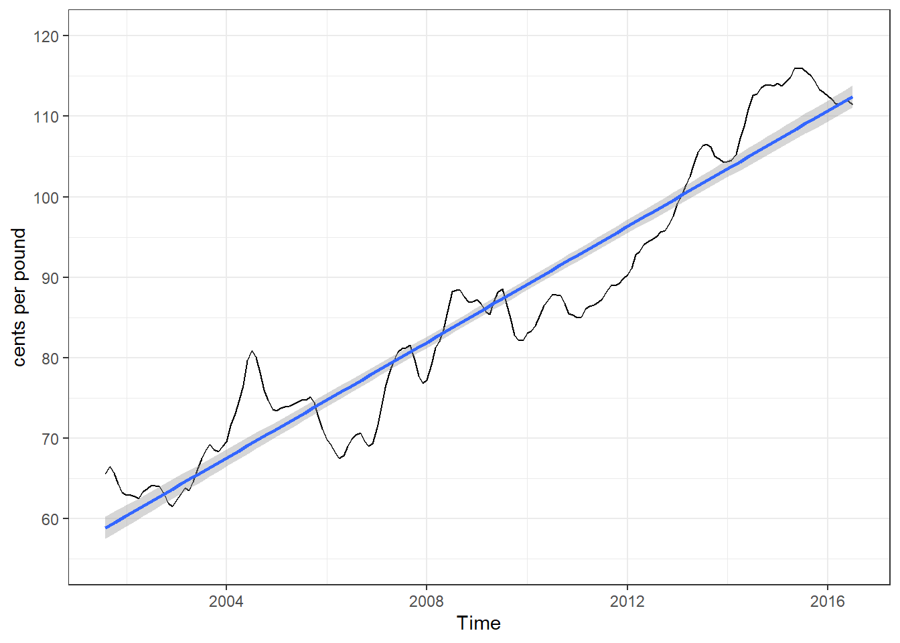
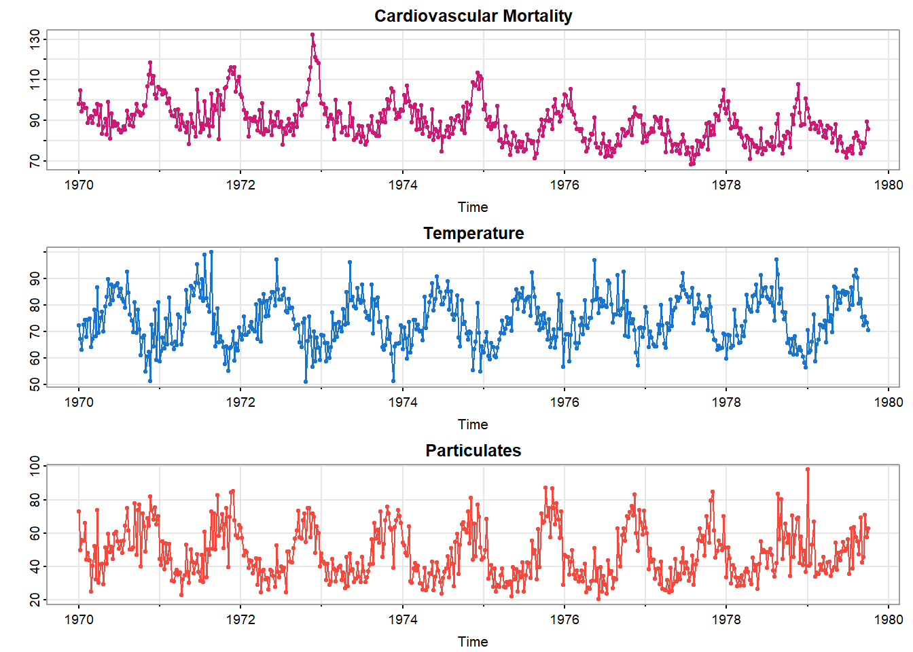

主要参考书籍为Shumway和Stoffer(2017)的Time Series Analysis and Its Applications: With R Examples。
该书第五版正在制作，配套astsa包中的部分数据集会逐渐更新，所以后期也许会换成第五版内容。
该内容为学习笔记，会很碎片化，同时参考了作者在github上给出的代码。
提示
提示框表明这部分完全是个人理解，可能有误。
一切错误和想讨论的内容欢迎联系邮箱(zhoubolin0404@126.com)，感谢！
在本章中，我们将介绍时间序列背景下的经典多元线性回归、模型选择、非平稳时间序列预处理(如趋势去除)的探索性数据分析、差分(differencing)和后移算子(backshift operator)的概念、方差稳定和时间序列的非参数平滑。
1 时间序列背景下的经典回归
对于时间序列\(x_t\)(\(t=1,\cdots,n\))，受到一组可能的输入或自变量序列(\(z_{t1},z_{t2},\cdots,z_{tq}\))的影响。用线性回归模型来考虑这种关系，则模型为：
\[ x_t=\beta_0+\beta_1z_{t1}+\beta_2z_{t2}+\cdots+\beta_qz_{tq}+w_t \]
其中\(\beta_0,\beta_1,\cdots,\beta_q\)是固定的回归系数，\(w_t\)是随机误差或噪声过程，均值为\(0\)，方差为\(\sigma_w^2\)，正态分布。
提示
\(z_{t}\)一般就是时间。
1.1 简单线性回归
图 1展示了2001年8月到2016年7月美国某码头鸡肉每月价格，直线是线性回归的拟合。
拟合模型为：
\[ x_t=\beta_0+\beta_1z_t+w_t,\ z_t=2001\frac{7}{12},2001\frac{8}{12},\cdots,2016\frac{6}{12} \]
其中\(w_t\)被假设为一个独立同分布的正态分布序列(如不成立需要进行额外操作，第三章会介绍)。
提示
没看懂为什么是\(2001\frac{7}{12}\)到\(2016\frac{6}{12}\)。
之后是对一元线性回归的计算，再后面是多元的，方法类似，故不对一元的进行解释，直接给出结果。
summary(fit <- lm(chicken ~ time(chicken), na.action = NULL))
Call:
lm(formula = chicken ~ time(chicken), na.action = NULL)
Residuals:
Min 1Q Median 3Q Max
-8.7411 -3.4730 0.8251 2.7738 11.5804
Coefficients:
Estimate Std. Error t value Pr(>|t|)
(Intercept) -7.131e+03 1.624e+02 -43.91 <2e-16 ***
time(chicken) 3.592e+00 8.084e-02 44.43 <2e-16 ***
---
Signif. codes: 0 '***' 0.001 '**' 0.01 '*' 0.05 '.' 0.1 ' ' 1
Residual standard error: 4.696 on 178 degrees of freedom
Multiple R-squared: 0.9173, Adjusted R-squared: 0.9168
F-statistic: 1974 on 1 and 178 DF, p-value: < 2.2e-16结果表明：斜率系数\(\hat\beta_1=3.59\)(标准误差为\(0.08\))，\(p<0.001\)，结果显著。
提示
接下来会论述多元线性回归的计算过程，方便引出Akaike信息准则(Akaike’s Information Criterion，AIC)，个人感觉不知道怎么推导也没什么问题。仅从个人理解角度进行概括，看不懂可以跳过，或者给出修改建议。
1.2 多元线性回归
多元线性回归模型，\(z_t=(z_{t1},\ z_{t2},\ \cdots,\ z_{tq})'\)和\(\beta=(\beta_0,\ \beta_1,\ \cdots,\ \beta_q)'\)这种列向量表示起来更为方便。
模型可以表示为：
\[ x_t=\beta_0+\beta_1z_{t1}+\beta_2z_{t2}+\cdots+\beta_qz_{tq}+w_t=\beta'z_t+w_t \]
其中\(w_t\sim\operatorname{iid\ N}(0,\ \sigma_w^2)\)。
普通最小二乘法(Ordinary Least Square，OLS)下，最小化的误差平方和(residual sum of squares或sum of squares for error，RSS或SSE)为：
\[ Q=\sum_{t=1}^{n}w_t^2=\sum_{t=1}^{n}(x_t-\beta'z_t)^2 \]
最小化(\(Q\)关于\(\beta\)的偏导数为0)需要满足\(\sum_{t=1}^n(x_t-\hat\beta'z_t)z_t'=0\)(表示\(w_t\)和\(z_t\)不相关)，得到正规方程(normal equations)：
\[ (\sum_{t=1}^{n}z_tz_t')\hat\beta=\sum_{t=1}^{n}z_tx_t \]
对这个方程求解就可以得到：
\[ \hat\beta=(\sum_{t=1}^{n}z_tz_t')^{-1}\sum_{t=1}^{n}z_tx_t \]
所以最小化的误差平方和为：
\[ \operatorname{SSE}=\sum_{t=1}^{n}(x_t-\hat\beta'z_t)^2 \]
这是无偏的(\(\operatorname{E}(\hat\beta)=\beta\))，且具有最小方差。
如果误差\(w_t\)是正态分布，\(\hat\beta\)是\(\beta\)的最大似然估计，且具有正态分布
\[ \operatorname{cov}(\hat\beta)=\sigma_w^2C \]
其中
\[ C=(\sum_{t=1}^{n}z_tz_t')^{-1} \]
\(C\)是\(z_t\)的协方差矩阵的逆。
方差\(\sigma_w^2\)的无偏估计是
\[ s_w^2=\operatorname{MSE}=\frac{\operatorname{SSE}}{n-(q+1)} \]
\(\operatorname{SSE}\)表示均方误差(mean squared error)。正态假设下
\[ t=\frac{(\hat\beta_i-\beta_i)}{s_w\sqrt{c_{ii}}} \]
服从自由度为\(n-(q+1)\)的\(t\)分布，\(c_{ii}\)表示矩阵\(C\)的第\(i\)个对角线元素。对于\(i=1,\ \cdots,\ q\)，该结果常用于检验零假设\(\operatorname{H_0}:\beta_t=0\).
竞争模型关注隔离或选择最佳自变量子集点。选择\(r<q\)个独立模型，即\(z_{t,1:r}={z_{t1},\ z_{t2},\ \cdots,\ z_{tr}}\)。模型为
\[ x_t=\beta_0+\beta_1z_{t1}+\cdots+\beta_rz_{tr}+w_t \]
零假设为\(\operatorname{H_0}:\beta_{r+1}=\cdots=\beta_q=0\)，使用\(F\)检验
\[ F=\frac{(\operatorname{SSE}_r-\operatorname{SSE}/(q-r))}{\operatorname{SSE}/(n-q-1)}=\frac{\operatorname{MSR}}{\operatorname{MSE}} \]
在自由度为\(q-r\)和\(n-q-1\)的\(F\)分布中进行检验。
整体逻辑是看添加上其他自变量，是否显著增加拟合效果。如果\(\operatorname{H}_0\)为真，则可以化简模型，反之则不可以。
| 误差源 | 自由度(df) | 平方和 | 均方 | \(F\)值 |
|---|---|---|---|---|
| \(z_{t,r+1:q}\) | \(q-r\) | \(\operatorname{SSR}=\operatorname{SSE}_r-\operatorname{SSE}\) | \(\operatorname{MSR}=\operatorname{SSR}/(q-r)\) | \(F=\frac{\operatorname{MSR}}{\operatorname{MSE}}\) |
| Error | \(n-(q+1)\) | \(\operatorname{SSE}\) | \(\operatorname{MSE}=\operatorname{SSE}/(n-q-1)\) |
当\(\beta_1=\cdots=\beta_q=0\)时，\(x_t=\beta_0+w_t\)，有：
\[ R^2=\frac{\operatorname{SSE}_0-\operatorname{SSE}}{\operatorname{SSE}_0}\\ \operatorname{SSE}_0=\sum_{t=1}^n(x_t-\bar x)^2 \]
\(R^2\)是确定系数(coefficient of determination)。
通过上述\(F\)检验来选择变量的纳入或删除，这就是逐步多元回归(stepwise multiple regression)。
下面介绍通过模型优度来进行模型选择的方法。
1.2.1 信息准则
\(k\)个系数的正态回归模型，方差的最大似然估计可表示为：
\[ \hat\sigma_k^2=\frac{\operatorname{SSE}(k)}{n} \]
其中\(\operatorname{SSE}(k)\)表示\(k\)个回归系数的模型的残差平方和。显然\(\operatorname{SSE}(k)\)会随着\(k\)的增加而单调减少。
信息准则的基本思路是在最小化\(\hat\sigma_k^2\)的同时，添加一个随\(k\)的增加而单调增加的惩罚项，来选择合适的参数数量。
1.2.1.1 Akaike信息准则(Akaike’s Information Criterion，AIC)
\[ \operatorname{AIC}=\log\hat\sigma_k^2+\frac{n+2k}{n} \]
最常用。
1.2.1.2 AIC，偏差修正(AICc)
\[ \operatorname{AICc}=\log\hat\sigma_k^2+\frac{n+k}{n-k-2} \]
适用于参数数量相对较大，但样本量较小的情况。
1.2.1.3 贝叶斯信息准则(Bayesian Information Criterion，BIC)
\[ \operatorname{BIC}=\log\hat\sigma_k^2+\frac{k\log n}{n} \]
BIC惩罚项的值远大于AIC，适合在大样本中选出较小的模型，防止过拟合。
1.2.2 模型选择

参考文献
Shumway, R. H., & Stoffer, D. S. (2017). Time series analysis and its applications: With r examples (4th ed.). Springer Cham. https://doi.org/10.1007/978-3-319-52452-8